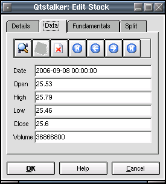
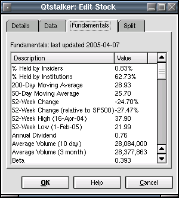
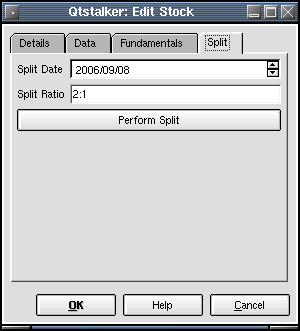

Stocks
Description:
This plugin is used for managing stock data.
Details Tab:
- Symbol - This is the 'ticker' name.
- Name - This is the name of the company.
- Type - This is the type of security. ie stock, futures etc.
- First Date - First available bar.
- Last Date - Last available bar.
Data Tab:
Here is where you can edit the bar data. To search for a specific
record use the search dialog and select a date and
time. To edit a field, just select a field and
change the values directly. To save your changes
press the save button. To delete a record press the delete button. To
navigate the records use the start, previous, next and end buttons.

Fundamental Tab:
Here, any company fundamentals are listed as downloaded via the
Yahoo
quotes plugin.

Split Tab:
Here is where the user can perform a split operation on the chart
data. Choose the date where you want the split to take place. Then
enter the split ratio ie. 2:1 or 10:1 etc. When ready press the perform
split button. Warning: Performing a split will permanantly change the
chart bars on disk.
